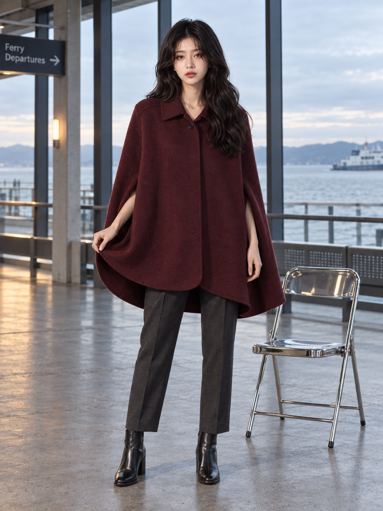
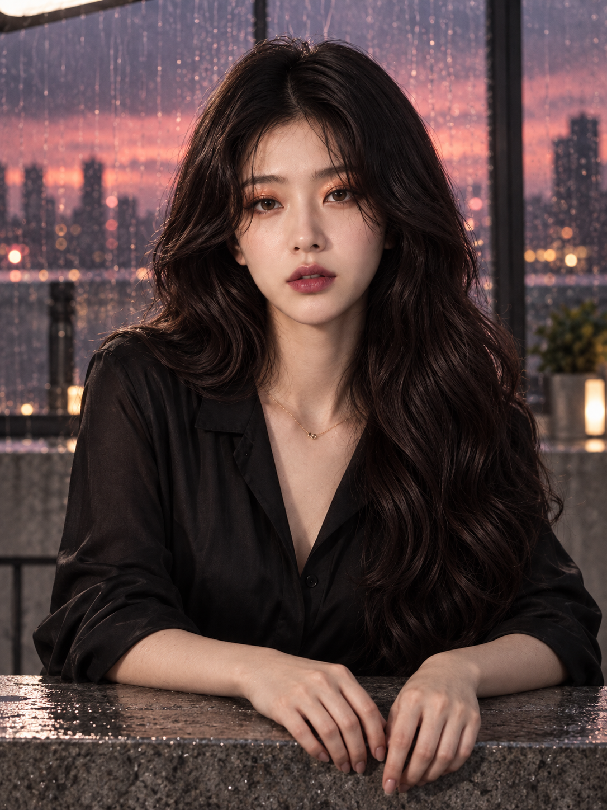
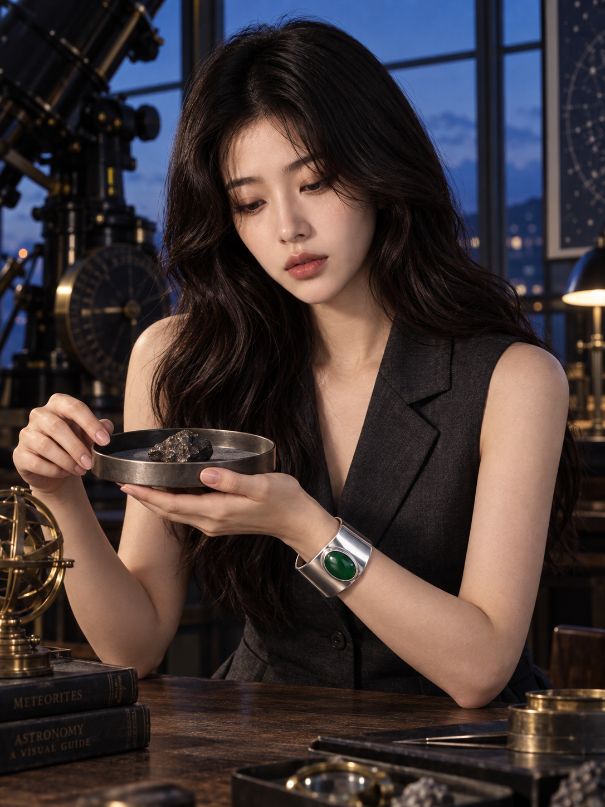

A · 해안 여객터미널 의상 룩북전체 장면 FAIL버건디 케이프의 넓은 앞면, 어깨 봉제선, 손으로 집은 옷자락, 전신과 부츠 지지는 보인다. 따뜻한 빛은 바닥·벽에 선명하지만 지정한 의복 가장자리에는 뚜렷하지 않다.NOT_EXERCISED실험 기록
B · 빗물 맺힌 루프톱 뷰티 에디토리얼전체 장면 FAIL양쪽 위눈꺼풀의 구릿빛 쉬머와 입술의 플럼 색이 각 부위에 있다. 입술 윤곽과 피부 미세 질감도 구분된다. 손가락은 석재 상판 위에 놓이지 않고 전면 가장자리 아래로 드리워져 있으며 전완이 안쪽으로 모인다.PASS: 3/3 gates for mep_beauty_detail실험 기록
C · 블루아워 천문대 주얼리 캠페인전체 장면 FAIL은색 커프와 초록 보석·베젤, 손목 소유권, 천문대 망원경과 푸른 창은 보인다. 커프는 트레이 테두리 아래에 있고 트레이는 낮은 가슴 높이까지 올라왔다. 받치는 손끝 일부는 겹쳐 숨고 열린 커프 끝도 확인되지 않는다. 얼굴이 제품보다 더 큰 시각적 비중을 차지한다.NOT_EXERCISED실험 기록